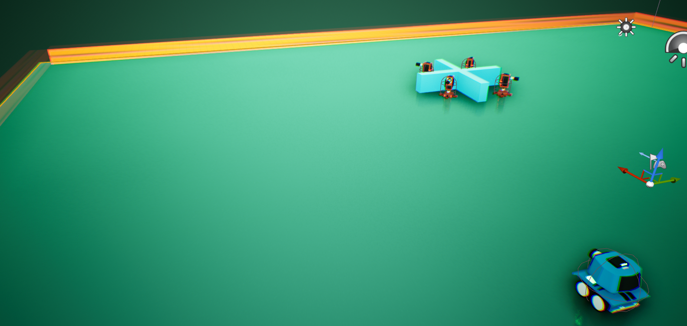

So this gets me to the first fun thing about coding. Even though html is not as complex as real programming languages, it does come with it's own unique challanges. And you know how Barney Stinson would put it:
What I really do not appreciate about this is, that i will not be able to fully focus on C++ in the beginning, until my html knowledge is good enough to just write my blogposts in Virtual Studio Code and migrating it to github. As you probably guessed: My blog is distributed through github as a static Webpage.
Here is, what my level looks like at the moment:
Edit: I just looked this page up on my phone and I most definately have to improve the formatting of the image. But thats something I will be tackling later on.
In the bottom right you can see the pawn Tank with its capsule, a camera. It already has the ability to get forward and backward movement. The orange turrets are the enemey in this tutorial which will be shooting projectiles at me.
So that will wrap up my first Blog post. Let's see, where more progress will happen. In